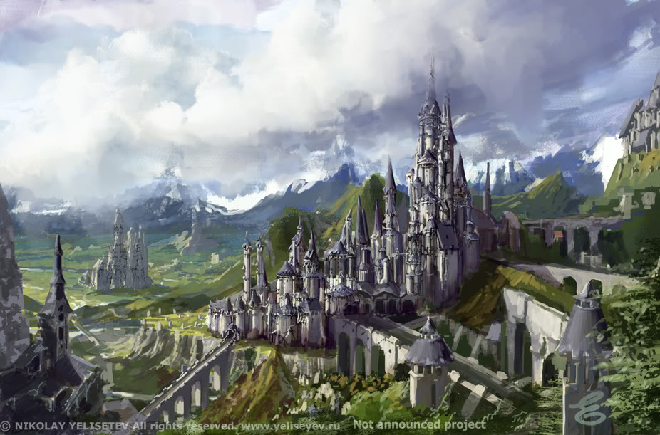

Ancient History
The scattered human towns and villages of the land now known as the Elsir Vale grew up along the Dawn Way, an important east-west trade road linking the heavily settled lands that lie northwest across the Endless Plains with the exotic kingdoms and goods of the coastal lands lying to the southeast.

Much of the Dawn Way was built by an ancient dwarven kingdom that spanned the Wyrmsmoke and Giantshield Mountains more than a thousand years ago. While their kingdom is long gone, their roads, bridges, and cisterns remain in use to this day. After the kingdom passed, the presence of various monsters and raiders kept traffic along the Dawn Way light for many years; few caravans dared the long and dangerous trek. Few humans lived in Elsir Vale during those years - only scattered settlements of druidic folk who tapped into the rich planar magic of the Vale. In the end, however, they left behind little more than grassy barrows and stone circles on the hilltops.
About five hundred years ago, the nearby city of Rhest came to control the vale and a large swath of land north of the Giantshield Mountains as well. Soldiers from Rhest secured the roads all the way to Dennovar and beyond, creating a safe passage for trade. More and more traders traveled the Dawn Way, and the kingdom of Rhestilor grew wealthy on the tariffs exacted from the passing merchants.
Under the kingdom's shield, the towns along the Dawn Way - Brindol, Dennovar, Talar, Terrelton, and the rest - grew up from tiny hamlets or lonely soldiers' posts to flourishing human settlements.
The kingdom of Rhestilor eventually collapsed under civil strife, monstrous incursions, and magical blights. Almost two hundred years and fifty years ago, the city of Rhest was burned by a savage horde that descended swiftly from out of the Wyrmsmoke Mountains. Although the warriors of Rhestilor killed much of the horde, the city was abandoned and the already weakened kingdom broken. The locks and canals surrounding Rhest fell into disrepair, and the Blackfens Swamp swallowed the ruined city.
In the years after the kingdom's fall, the towns of Elsir Vale came to look after themselves. Most of the local lords still held titles derived from the old kingdom of Rhestilor. While everyone knew that the kings of Rhestilor were long dead, no new realm arose in the Vale.